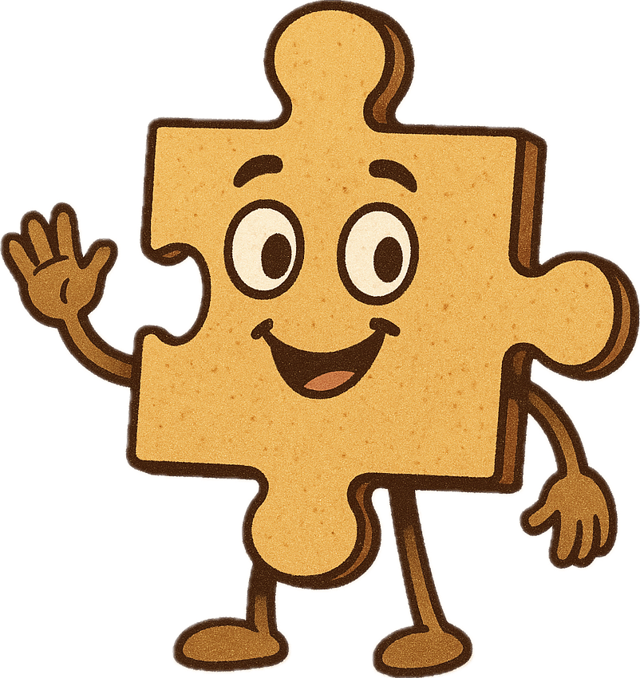
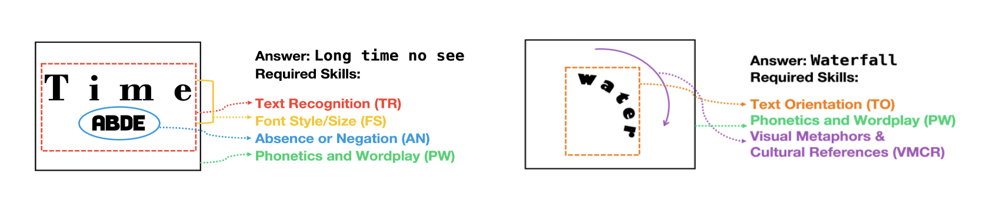
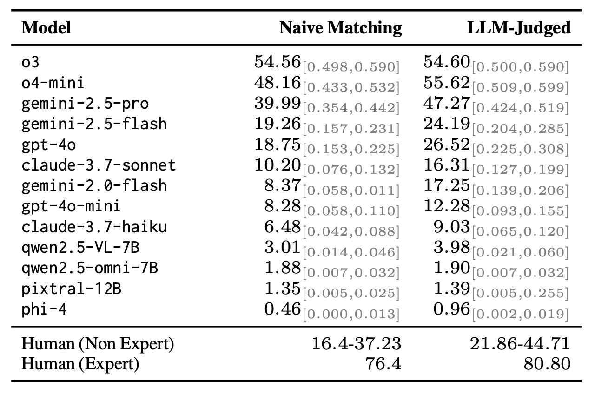
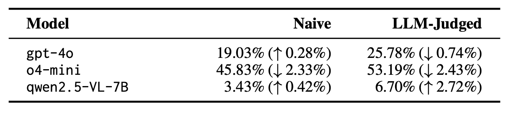
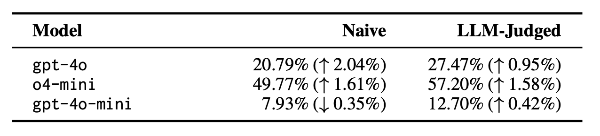
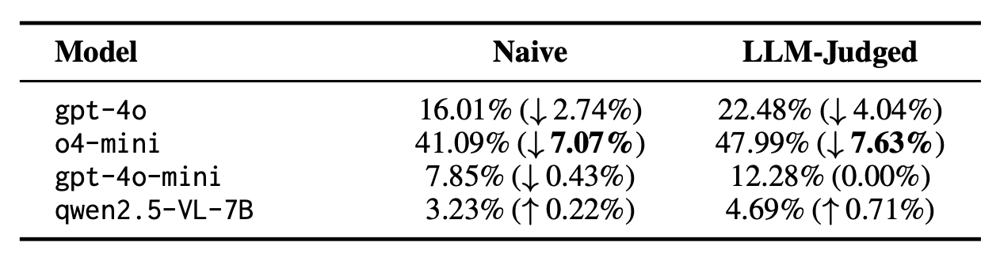
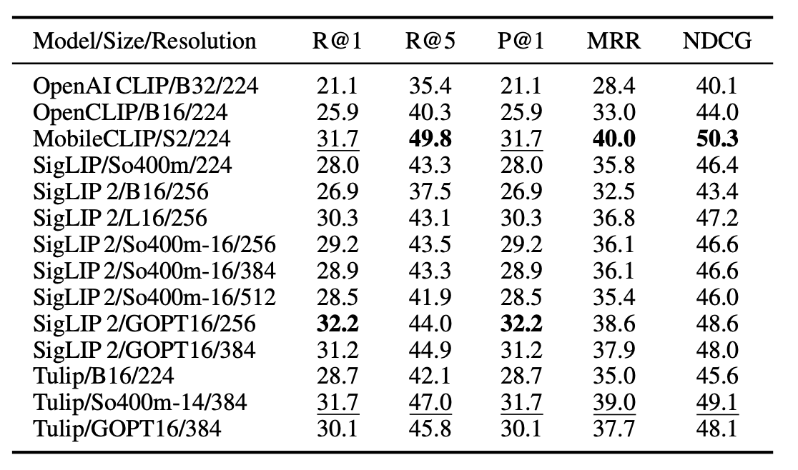
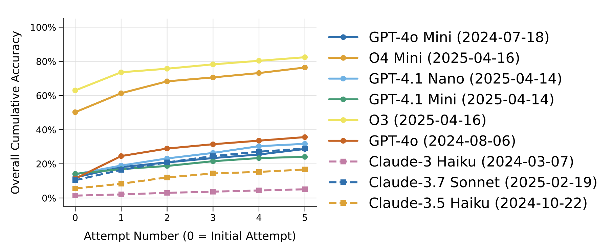

Rebus puzzles, visual riddles that encode language through imagery, spatial arrangement, and symbolic substitution, pose a unique challenge to current vision-language models (VLMs). Unlike traditional image captioning or question answering tasks, rebus solving requires multi-modal abstraction, symbolic reasoning, and a grasp of cultural, phonetic and linguistic puns. In this paper, we investigate the capacity of contemporary VLMs to interpret and solve rebus puzzles by constructing a hand-generated and annotated benchmark of diverse English-language rebus puzzles, ranging from simple pictographic substitutions to spatially-dependent cues ("head" over "heels"). We analyze how different VLMs perform, and our findings reveal that while VLMs exhibit some surprising capabilities in decoding simple visual clues, they struggle significantly with tasks requiring abstract reasoning, lateral thinking, and understanding visual metaphors.

We construct a human-crafted probe dataset of 432 rebus puzzles, challenging VLMs to reason effecitvely about visual-linguistic information. Each puzzle is annotated with its ground-truth solution and categorized into eleven cognitive skill types. This fine-grained labeling allows us to probe VLMs’ strengths and weaknesses across varied symbolic and visual reasoning tasks.
Try out our visual puzzles annotator to explore the dataset and test your own reasoning skills! (Click the button below) Submit the answer and move to the next question. You can download the json file of your answers.

Models show a wide range of performance
While closed source reasoning models such as o3, o4-mini, and gemini-2.5-pro perform relatively well, especially compared to human non-expert/non-native English speaking solvers, open-source reasoning models as non-reasoning models struggle to solve the tasks. Compared to expert solvers, however, there remains a significant model accuracy gap

Does models truly understand the concept of a “rebus” puzzle from the prompt alone?
To reduce prompt-specific bias, we frame the task as in-context learning using a single example with an image, answer, and reasoning. The results show that performance remains largely unchanged, indicating limitations come from the VLM itself rather than the prompt. While stronger models see little benefit, smaller models like Qwen2.5-VL gain slightly from a worked reasoning example.

Does models lack the capability to understand and apply which cognitive thinking skills are required for each puzzle?
Incorporating these skill-related prompts generally leads to minor improvements in model performance, suggesting the existence of an awareness vs. execution gap.

Vision? Or Language?
Caption-only experiments reveal that strong reasoning models perform notably worse without direct visual input, highlighting the importance of visual perception quality. We hypothesize this drop occurs because reasoning models lack iterative visual examination during decoding, suggesting future work should explore how such processes impact overall VLM performance.

How do visual contrastive models perform in retrieving the correct answers?
To probe the underlying visual encoders, we evaluate multiple contrastive VLMs for their ability to retrieve correct answers based solely on image-text similarity. MobileCLIP and SigLIP variants show competitive results despite differing architecture sizes and patch resolutions, suggesting that finer-grained tokenization and explicit visual objectives benefit symbolic puzzle matching.

Can models refine the solution given the opportunity to try again?
Allowing models to iteratively refine answers gives significant potential for iterative refinement or self-correction. However, they still reach a performance ceiling after a number of attempts.
@inproceedings{lee2025puzzled,
title={Puzzled by Puzzles: When Vision-Language Models Can't Take a Hint},
author={Heekyung Lee and Jiaxin Ge and Tsung-Han Wu and Minwoo Kang and Trevor Darrell and David M. Chan},
year={2025},
journal={arXiv preprint arXiv:2505.23759}}